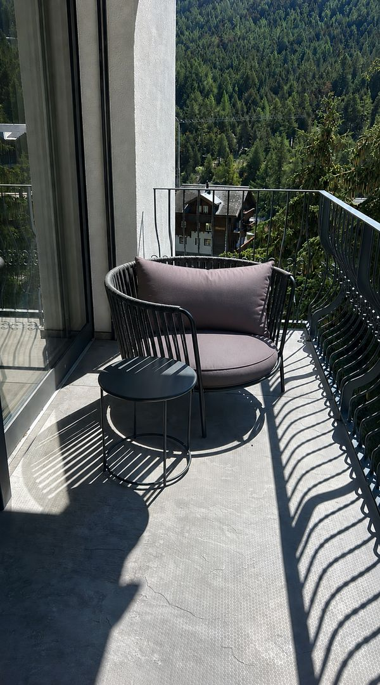
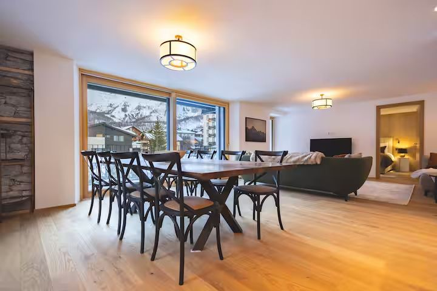
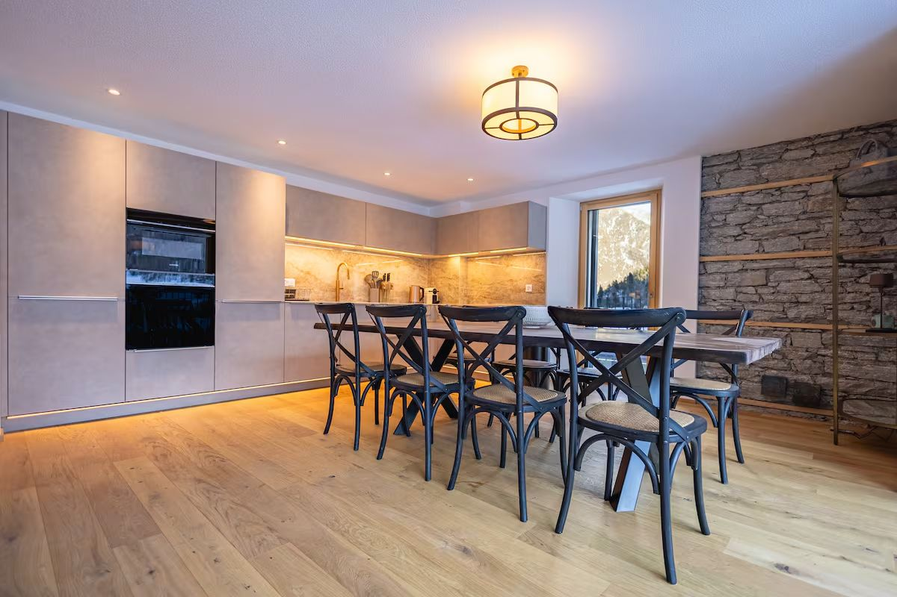
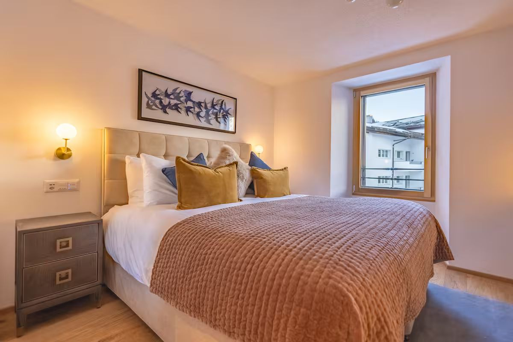
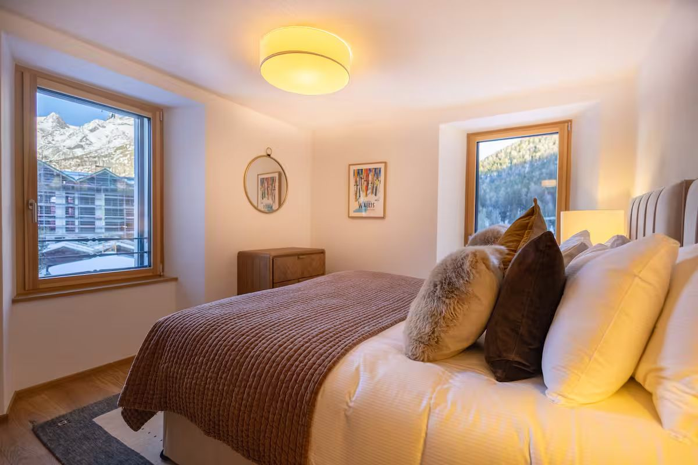
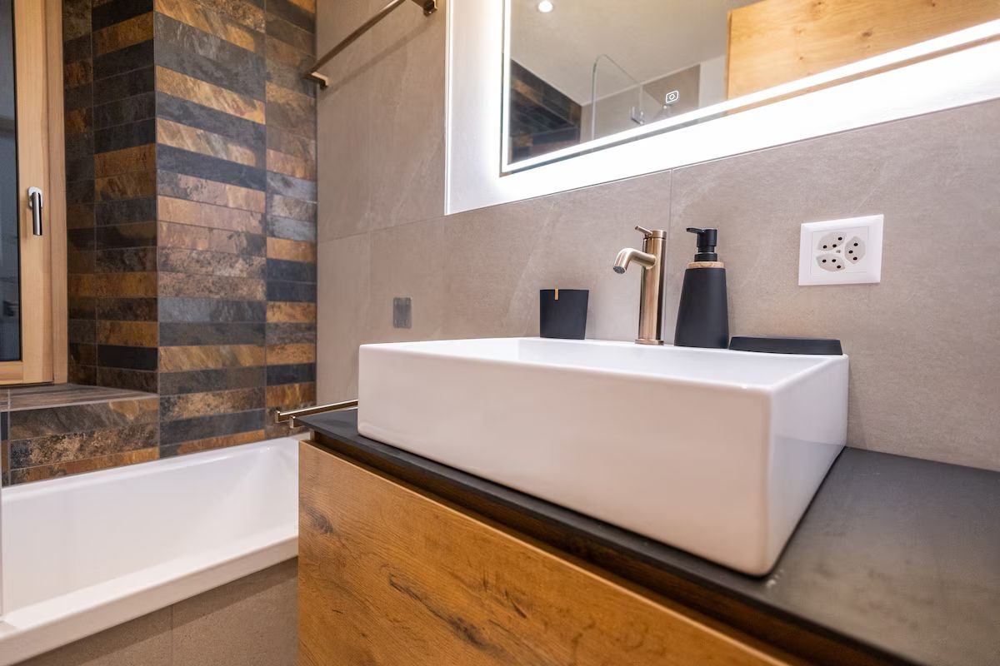
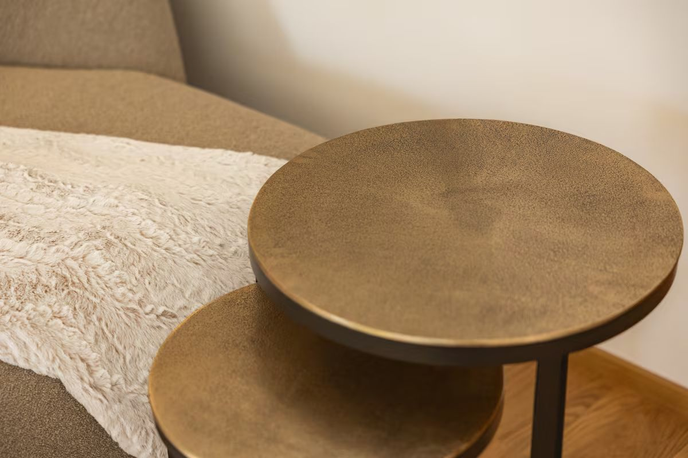
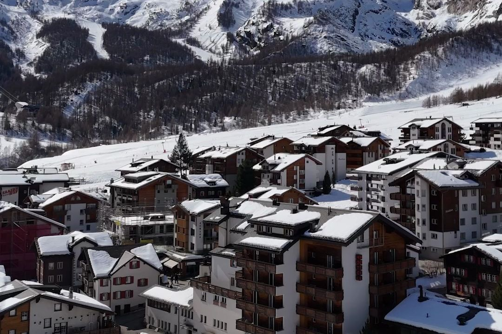
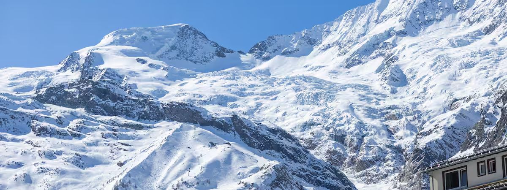

- Sleeps 8
- 4 king bedrooms
- 3 bathrooms
- 4 min to the slopes
A jewel beneath the glacier in car-free Saas-Fee
Eight guests. Four king-size beds. A walnut table long enough for every one of them, in a village where the loudest thing outside is boots on new snow.



The apartment
Room enough that nobody has to compromise
Most apartments that sleep eight ask somebody to take the small room. This one has no small room.
Bijou du Glacier occupies the east end of the second floor of Residence du Glacier, a building renovated from the ground up, in the very heart of the village. Four bedrooms, each with its own king-size bed on a Hypnos mattress, its own window and its own morning light. Three bathrooms in pale stone and dark slate: two with deep baths, the third with a walk-in shower.
And one long open room. Kitchen, sitting room and a live-edge walnut table that seats all eight at once, so the party stays together instead of scattering across floors.
Then there is the balcony. It runs the whole front of the apartment, covered, and faces straight into the mountains. Comfortable seating, afternoon sun until the light leaves the summits, and thirteen four-thousand-metre peaks doing the entertaining.


The rooms
Inside Bijou du Glacier
The elegance of a modern chalet apartment: warm alpine materials and contemporary comfort throughout, generous light, and mountain views from almost every window.







The address
Four minutes from the slopes. A world from the traffic.
In the village, not above it
Four minutes to the slopes. Twenty metres to the supermarket. The bakery, the ski hire and every restaurant worth the walk are closer still. In a resort where you drive, being central is a convenience; in a village where nobody drives, it is the entire shape of the week. You arrive, you leave the car at the entrance, and you never think about getting anywhere again.
Thirteen four-thousanders, from your own balcony
The balcony faces the Mischabel, the massif that carries the Dom, the highest summit standing entirely on Swiss soil. Morning light comes down that face before it reaches the village. In the evening the summits hold it twenty minutes longer than the street below, which is reason enough to still be sitting out there at seven.
The village
Saas-Fee, the Pearl of the Alps

No cars. No engines. A glacier directly overhead that skis in July as readily as in January.
Saas-Fee stands at 1,800 metres inside a horseshoe of thirteen four-thousand-metre peaks, and it has been closed to traffic for decades. Visitors leave their cars at the entrance and continue on foot. What is left is a village that sounds the way alpine villages are supposed to sound.
Above it, the Metro Alpin climbs inside the mountain to the Allalin glacier at 3,500 metres, where the snow holds all year. It is why national teams train here in August, and why your season is never quite over.
Good to know
Everything you will want to ask
How many people does the apartment sleep?
Eight, in four bedrooms. Every one has a king-size bed on a Hypnos mattress. No sofa beds, no mezzanines, and no room that turns out to be a cupboard with a window.
Is the apartment ski-in, ski-out?
No, and we would rather say so plainly. Bijou du Glacier stands in the very heart of the village, a four-minute walk from the slopes. Saas-Fee is car-free, so everyone walks everywhere in any case. But if a ski-in, ski-out door is what you are after, this is not that apartment.
Where do the skis go?
There is a ski locker in the basement of the building, included with the apartment, and a lift up to the door. Many guests still leave their skis at the slopes overnight, on the grounds that four minutes each way in ski boots is four minutes better spent at breakfast.
Where do we park?
In the covered car parks at the entrance to the village. Saas-Fee has been car-free for decades: you leave the car at the edge, and from there it is a short walk or a village electric taxi to the door.
Is there a proper kitchen?
Yes, fully equipped. Oven and range, induction hob, microwave, dishwasher, coffee maker and kettle, and enough glassware and crockery for the whole party, with a live-edge walnut table that seats eight without anyone eating off their lap.
Is it good for children?
Very. The village is car-free, so there is no road to keep them off, and the apartment has games for wet afternoons, plenty of warm blankets, and a lift that saves carrying anyone up the stairs at the end of a long day.
Is it open in summer?
Yes. The Metro Alpin runs up to the Allalin glacier through the summer, so Saas-Fee is one of the few places in the Alps where you can ski in July and walk below the treeline the same afternoon.
Is booking direct actually cheaper?
The nightly rate is the same as on the platforms. The difference is what sits on top of it: the platforms add their own service fee to the guest's total, and booking direct does not. Ask about a flexible check-out while you are at it.
Availability
Reserve your stay
Book direct
The nightly rate is identical to the platforms. Booking with us simply takes their service fee off your total, and puts you in touch with the people who look after the apartment from your very first message.
Managed locally by SaasFeeHolidays.com
Or find the same apartment on